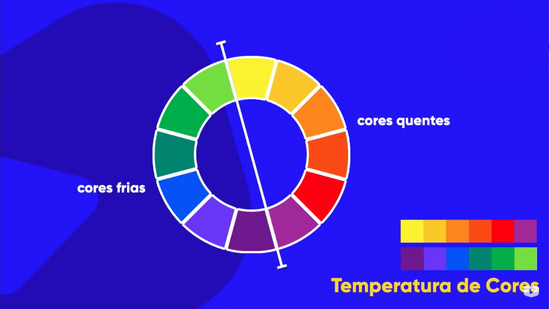

Harmonização de cores é a combinação de cores que criam um efeito visual agradável e equilibrado. Existem várias técnicas para harmonizar cores, como o uso de cores complementares, análogas, tríades, entre outras.
Na hormania das cores também temos a simetria, onde temos uma comodidade visual.
Circulo Cromatico
Cores Primárias

Cores Secundárias
Cores Terciárias
Temperatura das Cores
Cores Complementares.
Cores que estão em lados opostos do círculo cromático, que se contrastam.
Cores Análogas
Sel. uma cor e sel. uma de cada lado.
Cores Análogas e Complementar

Cores Análogas Relacionadas
Sel. uma cor e a ao lado, pula uma e sel. a próxima.
Cores Intercaladas
Sel. uma cor e pula uma. Seleciona a próxima, pula uma e seleciona a próxima.
Cores Triádicas
Sel. uma cor e pula três cores, formando um triângulo no círculo cromático.
Cores em Quadrado
Sel. uma cor e, pula duas cores, sel. a outra e pula mais duas,
formando um quadrado no círculo cromático.
Cores Tetrádicas
Sel. uma cor pega a oposta, e pula três cores da primeira cor selecionada,
pega a oposta desta cor também, formando um retângulo no círculo cromático.
Cores em Monocromia
Variações de tons de uma única cor.